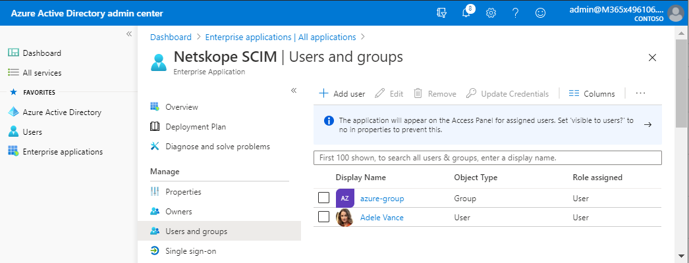
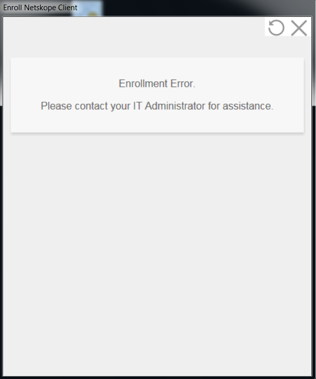
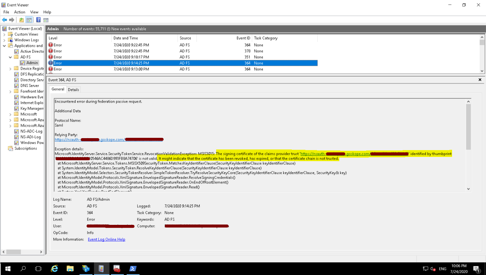
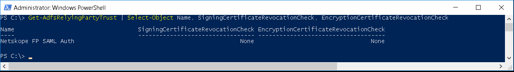
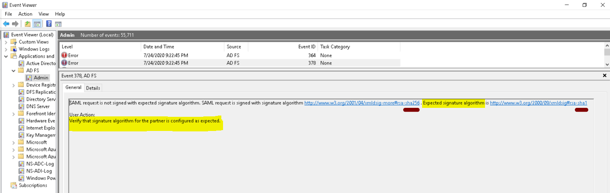
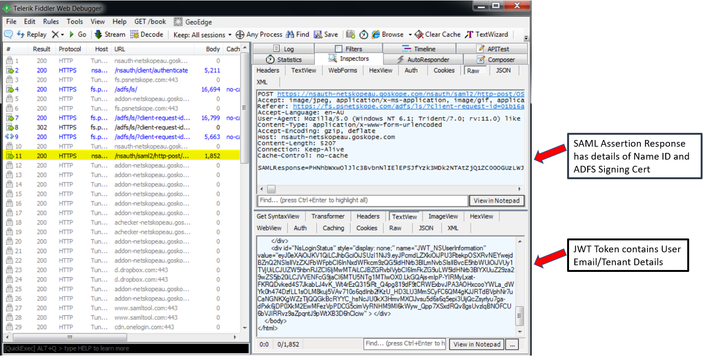

Azure and ADFS Troubleshooting
The Netskope Client displays an error when downloading the configuration file post login to ADFS IdP
The Netskope Client may display the below error downloading configuration files.
 |
This error can occur when user is not assigned to the Netskope SCIM provisioning app in Azure or user not on-boarded into the Netskope tenant or incorrect claim value in ADFS.
Check if user has been assigned to the Netskope SCIM provisioning app in Azure which on-boards users into the Netskope tenant.
 Check if the user has been on-boarded into the tenant under Settings > Security Cloud Platform > Users.

Check if Name ID is set to Email in the claims issuance policy in ADFS.

Where can I view SCIM synchronization logs in Azure for troubleshooting sync issues?
Go to the Audit Logs section within the SCIM application.
 |
After logging in to ADFS via the Netskope Client I get an Enrollment error
The Netskope Client may display the below error during Enrollment.
|  |
There could be multiple reasons for this error:
Check if Name ID is set to Email in the claims issuance policy in ADFS.
Check event logs on the ADFS server for any unauthorized access. The user may need to be added to an AD group to permit access to the Relying Party Trust. Below is an example of user getting denied access.

ADFS might be rejecting the certificate as part of the signing certificate revocation checks; see error message below If you are getting the above signature errors then check if you have disabled Signing and Encryption checks for the Relying Party Trust
 Netskope Certificates are self-signed and cannot be validated via the public internet. Also, the certificates do not have any public facing CRL Distribution Points or AIA values configured within the certificate. You need to set the certificate checks to None.
 The Secure Hash Algorithm may be set incorrectly. If so, you will get the below error in the ADFS event logs.
 Set value to SHA1 in ADFS for the Relying Party Trust.

Why do I get a message Unable to verify Organization name when NS Client service starts
You may get the below message if you have not configured Forward Proxy - SAML or have not enabled Forward Proxy – SAML in the tenant.
 |
Check to ensure Forward Proxy – SAML settings have been configured and enabled in tenant as shown.
 |
 |
I have been on-boarded into Netskope tenant with my Email address, but I use my UPN or SAM account name (e.g. domain\username) as my ADFS login and not my email address, so will Netskope Client work in IdP mode?
Yes, the Netskope Client will work even if your login ID does not match your email address as long as user’s email address has been set and configured in ADFS issuance claim.
Email address must be populated for Name ID outgoing claim type in ADFS.
|
I have removed/de-provisioned the user from the tenant, so why is the Netskope Client still active on the device for the user?
By design once the user configuration files have been downloaded onto the device the Netskope Client will always enable itself even if the user has been removed/de-provisioned from the tenant.
The solution is to select Uninstall clients automatically in the device config. This will automatically uninstall the client from the device.
 |
Note
If a Client was installed with multi-user option, this will only remove the Client user configs from the user’s profile on the next config sync or reboot. This does not affect other users on the device.
How can I troubleshoot SAML responses with the Netskope Client in IdP mode?
You can deploy fiddler on the device; enable HTTS intercept on fiddler and can see the responses.
Install fiddler and enable HTTPS Intercept and add gateway and add-on URL exclusions.

Start the NS Client IDP mode enroll process; fiddler will start capturing all the events.
Before login

Post Login

Save All Session
This will create a session archive file with a “.saz” extension that you can provide to Support.

But you can troubleshoot by clicking on the http-post SAML response and using the SAML decoder to view the SAML responses. You can copy the values in any SAML decoder (search online for a decoder) to view the details.
 Example of SAML response decoded for troubleshooting containing ADFS certificate and NameID

Example of SAML response JWT token decoded for troubleshooting containing tenant details